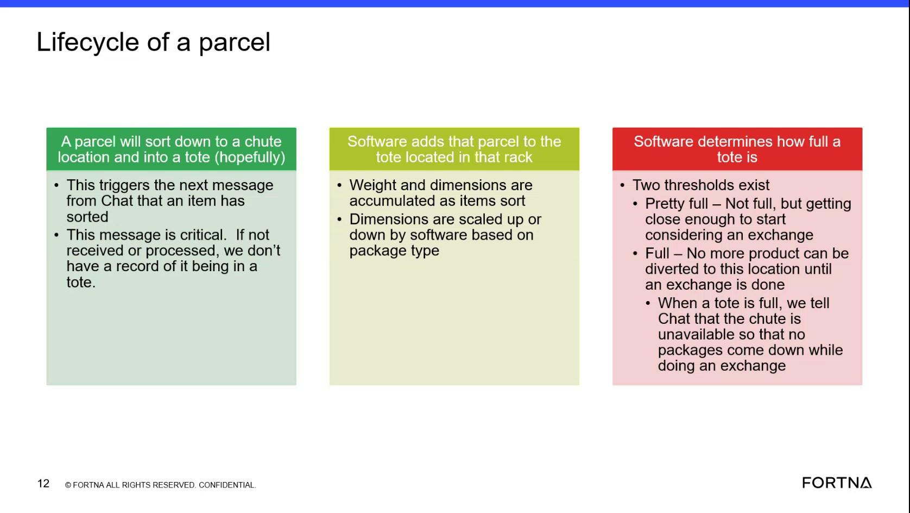

| Procedure ID | proc_interpret_tote_fill_thresholds_to_understand_exchange_readiness_v1 |
|---|---|
| Title | Interpret Tote Fill Thresholds To Understand Exchange Readiness |
| Procedure Type | reference |
| Primary Role | operator |
| Support Safe | Yes |
| Validation Status | needs_sme_review |
| Merge Status | source_finalized |
Use the source-defined tote fill thresholds to understand whether a tote is nearing exchange consideration or is full and unavailable for additional diversion.
Use when reviewing tote or location status in the parcel lifecycle context and you need to interpret the source-defined meanings of the tote fullness states "Pretty full" and "Full."
Responsible role: operator
Instruction:
Identify the tote or location being discussed in the parcel lifecycle context, where a parcel sorts down a chute into a tote in a rack.
Expected result:
The operator is looking at the correct tote or location context for threshold interpretation.
Screens / Images:

Stop or Escalate If:
Responsible role: operator
Instruction:
Check the documented tote fullness state using the source-provided thresholds "Pretty full" and "Full."
Expected result:
The tote state is matched to one of the documented threshold labels.
Screens / Images:
Stop or Escalate If:
Responsible role: operator
Instruction:
Interpret "Pretty full" as not full yet, but close enough to start considering an exchange.
Expected result:
The operator understands that "Pretty full" indicates nearing exchange readiness, not a fully blocked location.
Screens / Images:
Stop or Escalate If:
Responsible role: operator
Instruction:
Interpret "Full" as no more product can be diverted to this location until an exchange is done.
Expected result:
The operator understands that a full tote is unavailable for additional diversion until exchange is completed.
Screens / Images:
Stop or Escalate If:
Responsible role: operator
Instruction:
Record the observed threshold meaning using only the source-provided definitions.
Expected result:
The threshold meaning is documented as either nearing exchange consideration or full and unavailable for additional diversion until exchange is done.
Stop or Escalate If: